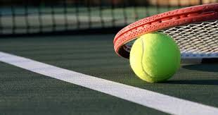
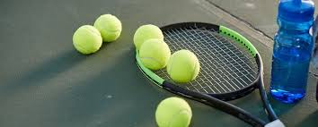
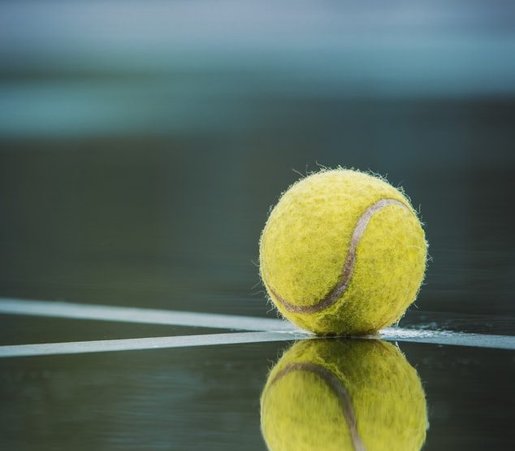
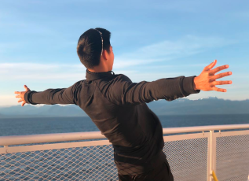

I love tennis!
Tennis is a unique sport. It provides both endurance and fast movement training. This has a profoundly positive effect on the heart and lungs. Studies show that playing just 2 hours a week reduces the risk of heart disease by over 40%. Furthermore, playing tennis can reduce the rate of decline of our fitness as people get older. In a study looking at a vareity of sports, it was identified that tennis players had the longest life expectancy. They live longer by about 10 years! Tennis is a sport for all ages, genders, sizes and expertise levels. It has benefits including maintaining healthy body composition, bone health, balance and muscle strength.
What is Tennis?
Tennis is a racket sport that can be played individually against a single opponent or between two teams of two players each. Each player uses a tennis racket that is strung with cord to strike a hollow rubber ball covered with felt over or around a net and into the opponent's court.
To start off any game, one player serves from the deuce from the right side of the court behind the baseline sp he can hit the ball crosscourt into the service box on the other side of the net. This same player then serves the entire game alternating from the deuce side to the advantage side of the court point to point. After each player has served an entire game from their respective sides, it’s time to switch ends of the court.
1. If a ball is hit and it lands on or inside all of the boundary lines and is not returned, that’s a point for the person that hit it!
2. If a ball bounces twice within all of the boundary lines before it is returned, that’s a point for the person that hit it!
3. If a ball is served and it bounces within the service box boundary lines and is not successfully returned, that’s a point for the person that served it!
4. Better, if a ball is served and it bounces within the service box boundary lines and is not touched at all, it’s called an “Ace”!
5. If you hit into the net, that’s a point for your opponent. Don’t worry, it happens to absolutely everyone!
6. If your opponent “double faults” (we will get to that) on their serve, that’s a point for you!
7. If your racquet at any point hits the net, that’s a point for your opponent.
8. If the ball hits the net during a point but still falls over and “in” on the other side, consider yourself lucky as the person who hit it gets the point. But as it’s often considered a “lucky bounce”, be a good sportsperson and accept the point graciously by giving your opponent a quick apology!
Games are scored starting at love. From there the first point is 15, the second point is 30, and the third point is 40. After 40 comes the game point. For the game point, you have to win by two. So, if it is tied 40:40, which is also referred to as deuce. The next person to win a point receives an advantage.
Sets are made up of games and the first player to win six games wins the set. However, like games, you have to win a set by two. If the set score is 6 to 5 the player with the lead must win the next game to win the set.
A match is made up of an odd number of sets. At the major tournaments, men’s singles and doubles matches usually consist of up to five sets and women’s singles the best of three sets.
Tennis Benefits by Joey Zhou
1 hour of tennis burns 600 calories!
Tennis can decrease your chance of suffering from stroke, hypertension, and cardiovascular issues.
Tennis can burn an estimated 600 to 1,320 calories per two-hour singles sessions while competitive players can burn between 768 to 1,728 calories.
When playing tennis, your mind is forced to focus of the task at hand instead of focusing on stresses.
Lowers resting heart rate and blood pressure.
Improves metabolic function
Increases reaction times.
Improves muscle tone, strength and flexibility
By Joey Zhou

By Joey Zhou
10$ Donation
Feeling generous?
Donations are appreciated to keep this site running :D.
30$ Donation
Really generous :D
Donations are appreciated to keep this site running :D
40$ Donation
Wow! Very generous!
Donations are appreciated to keep this site running :D
Like tennis too? Let's contact eachother